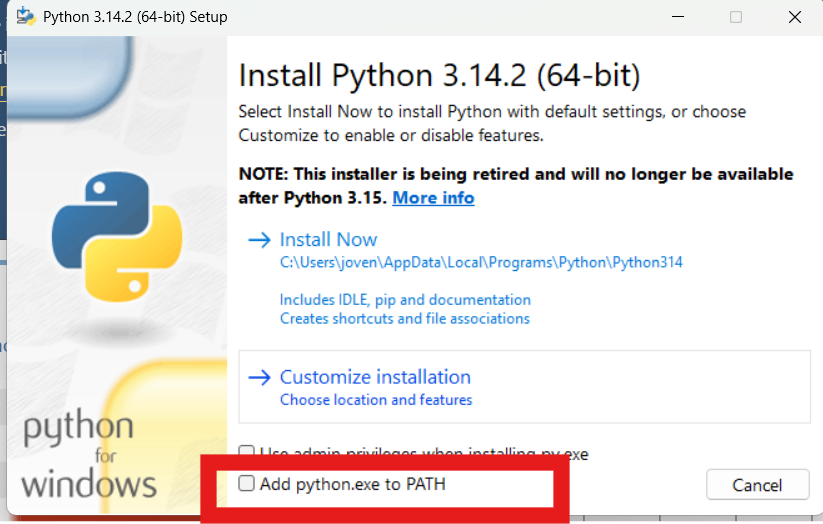
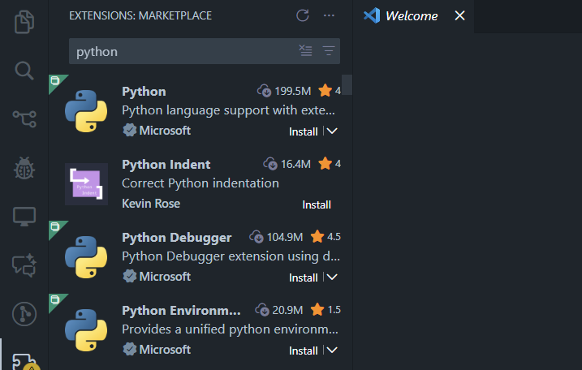
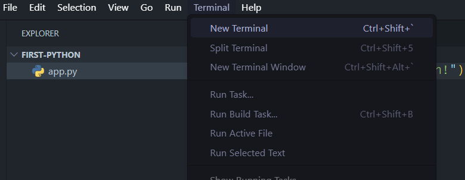

What you will learn
This tutorial shows you how to install Python, set up VS Code, and run your first program.
Requirements (what you need)
If you are on a school computer, ask your teacher for install permission if requires.
Step 1: Install Python
Python is the language you will use. We will install the official version from Python.org.
Windows install (click to expand)
1. Download Python
Open the official website: python.org/downloads
Click the link for the latest Python release.

2. Run the installer
Double-click the downloaded file. On the first screen:
- Check Add Python to PATH 
- Click Install Now
The PATH checkbox makes Python work in the terminal.
3. Verify Python
Open PowerShell or Command Prompt and run:
python --version
You should see a version number (like 3.x.x).

macOS install (click to expand)
1. Download Python
Open: python.org/downloads/macos
Download the latest macOS installer (.pkg file).
2. Run the installer
Open the .pkg file and follow the steps.
This installs Python 3 in /Library/Frameworks and makes it available in the Terminal.
3. Verify Python
Open Terminal and run:
python3 --version
You should see a version number (like 3.x.x).
Step 2: Install VS Code (your IDE)
VS Code is the code editor we will use to write and run Python.
2. Install VS Code
Run the installer and accept the defaults.
On Windows, enable "Add to PATH" if asked.
3. Add the Python extension
Open VS Code. Go to Extensions (left bar), search for Python by Microsoft, and click Install.
Step 3: Your first Python app
We will create a tiny program that prints a message.
1. Create a new folder
Create a folder named first-python anywhere on your computer.
2. Open folder in VS Code
In VS Code: File → Open Folder → choose first-python.

3. Create a file
Create a new file named app.py.
Type this code:
print("Hello, Python!")
4. Run your program
Open the VS Code terminal (Terminal → New Terminal).
Run:
python app.py (Windows)
python3 app.py (macOS)
You should see Hello, Python!